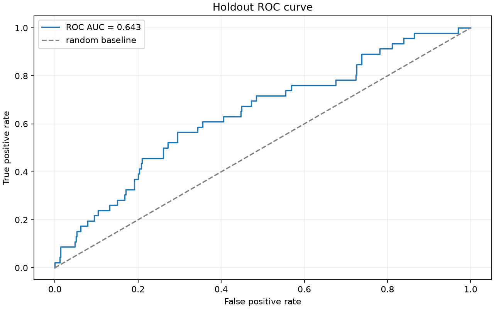
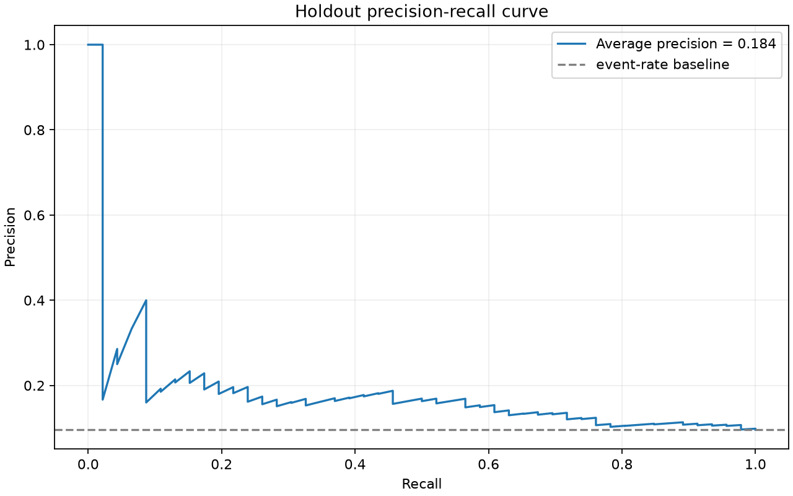
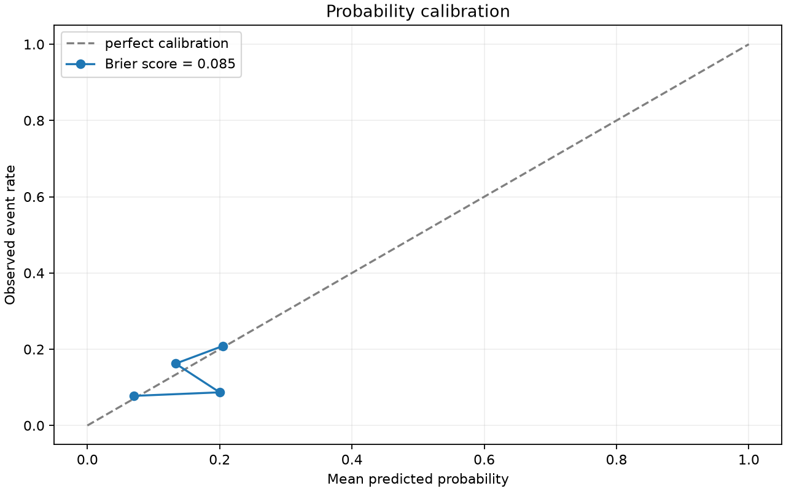
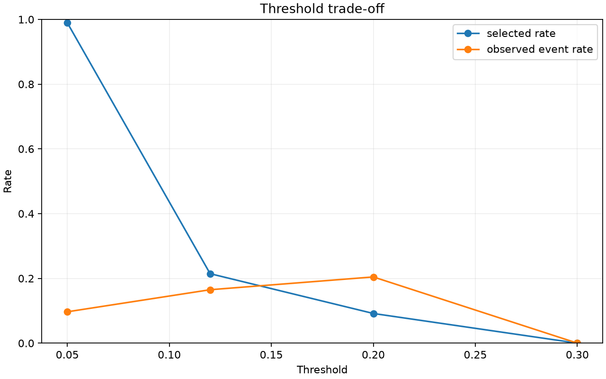
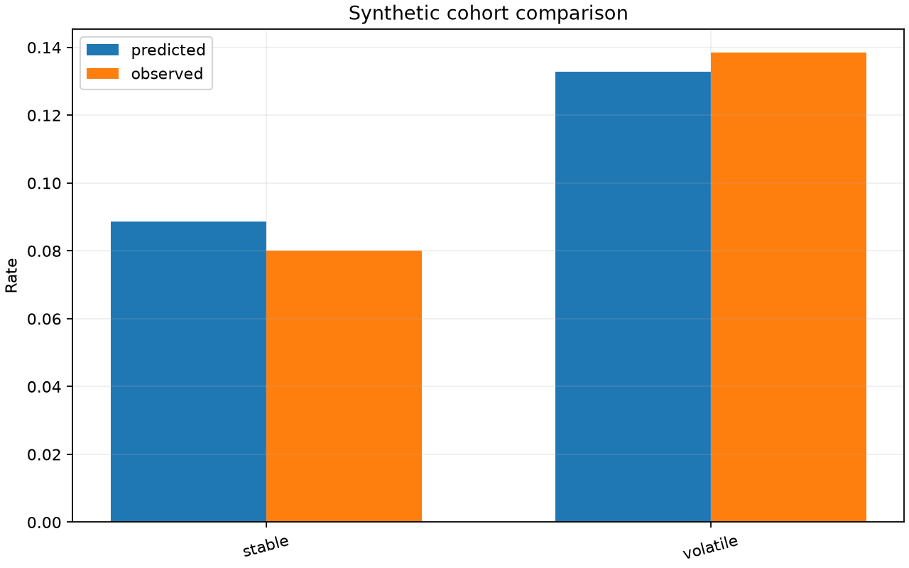
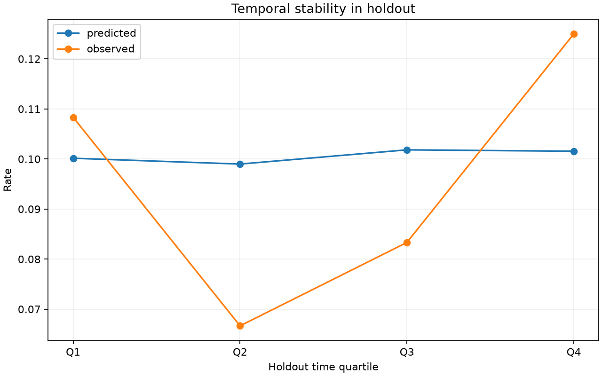
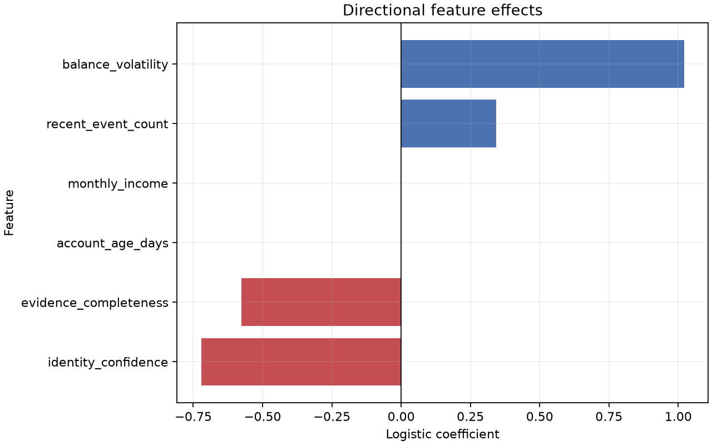

Detailed synthetic ML evaluation report
Data is generated with a fixed seed, temporal drift, seasonality, two artificial cohorts, data-quality bands, and a nonlinear interaction. The estimator is trained on the first 60% of time, isotonic calibration uses the next 20%, and all reported metrics use the final 20% holdout. Diagnostic metadata is excluded from model features.
The model is a logistic classifier. ROC AUC measures ranking, average precision emphasizes the positive class, and Brier score measures probabilistic accuracy after calibration. Policy thresholds are analyzed separately from model fitting.
| Metric | Value |
|---|---|
| roc_auc | 0.643358 |
| average_precision | 0.184151 |
| brier_score | 0.085043 |
| holdout_rows | 480.000000 |
| holdout_event_rate | 0.095833 |


Calibration asks whether a group predicted at probability 0.20 experiences the event at approximately 20%. Threshold analysis shows how selection volume and observed event rate change without retraining the model.


| Threshold | Selected rate | Observed event rate | Precision | Recall |
|---|---|---|---|---|
| 0.05 | 0.990 | 0.097 | 0.097 | 1.000 |
| 0.12 | 0.215 | 0.165 | 0.165 | 0.370 |
| 0.20 | 0.092 | 0.205 | 0.205 | 0.196 |
| 0.30 | 0.000 | 0.000 | 0.000 | 0.000 |
Evidence completeness is represented as a synthetic diagnostic variable. It is not treated as a favorable signal when missing: the policy layer can route incomplete evidence to review.
| Quality band | Rows | Share |
|---|---|---|
| high | 301 | 0.627 |
| low | 40 | 0.083 |
| medium | 139 | 0.290 |
Cohorts are artificial diagnostic slices, not protected groups and not a real-world fairness assessment. Temporal stability compares predicted and observed rates across holdout time quartiles.


| Cohort | Rows | Mean probability | Observed event rate | Brier score |
|---|---|---|---|---|
| stable_synthetic_cohort | 350 | 0.0886 | 0.0800 | 0.0735 |
| volatile_synthetic_cohort | 130 | 0.1329 | 0.1385 | 0.1163 |
These coefficients show directional effects in the uncalibrated logistic score. They are not causal effects and should not be interpreted as individual explanations without additional validation.

| Feature | Coefficient |
|---|---|
| identity_confidence | -0.72137 |
| evidence_completeness | -0.57619 |
| account_age_days | -0.00124 |
| monthly_income | -0.00016 |
| recent_event_count | 0.34333 |
| balance_volatility | 1.02125 |
python scripts/generate_evaluation_report.py --seed 42 --rows 2400.